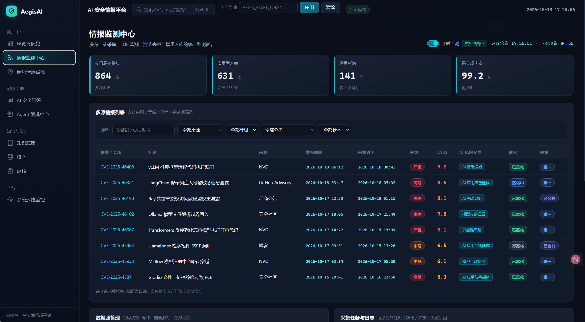

从漏洞公告到资产影响判断
查看界面预览、已保存的调查结果与可追溯证据，或下载源码在本地运行。
本站展示历史记录，不连接模型、不创建新调查。实时调查需按启动说明部署完整后端。

C08 · 历史真实 HTTP
PASS_WITH_WARNINGS保留维护分支，判断具体资产版本
langchain-core 1.2.0 · CVE-2025-68664
该记录保留不同维护分支的版本范围，并给出当前分支升级至 1.2.5 的建议。风险等级来自当时系统输出，指定风险政策的绑定仍需复核。
正在读取已保存记录……
C09 · 历史真实 HTTP
PASS_WITH_WARNINGS核对版本顺序，定位结论引用
vLLM 0.29.0 · CVE-2026-105752
该记录对 0.29.0 与 0.30.0 进行适用性判断，并保留公告的结构化范围与证据定位。首次计划缺少必填字段，随后在原重试预算内修正。
正在读取已保存记录……
源码与本地运行
源码包包含完整后端、前端、数据库迁移、依赖文件及启动说明。后端基线为 4fddc5c，团队前端更新为 437cb84；案例运行时间与源码版本分别记录。
- 准备 Python 3.12、Node.js 22+、PostgreSQL、Git 和可用的模型服务。
- 按说明创建自己的专用数据库，安装锁定依赖并配置模型；凭证只保存在本机。
- 启动后端和 Node 同源代理，再访问本地工作台提交真实调查。
源码不包含模型权重、真实 API Key、原数据库备份或原演示机资产库存。首次运行需要自行准备这些资源。
验证范围与使用边界
C08/C09 是限定场景的真实历史运行记录。页面保留同源警告、未知状态及核验引用；本次静态发布没有重新调用模型或进行 49 题评测。
- 窗口中的界面示例与下方真实调查记录分开展示，不将演示计数作为实验结果。
- Windows Worker 组合执行可靠性问题仍未解决；并发、取消、超时及冷启动尚未充分验证。
- 风险政策适用性与整体语义正确性仍需进一步复核；小样本不能证明整体架构优于单次模型回答。
- 适用于本地研究与项目演示，重要安全结论应由分析人员复核。